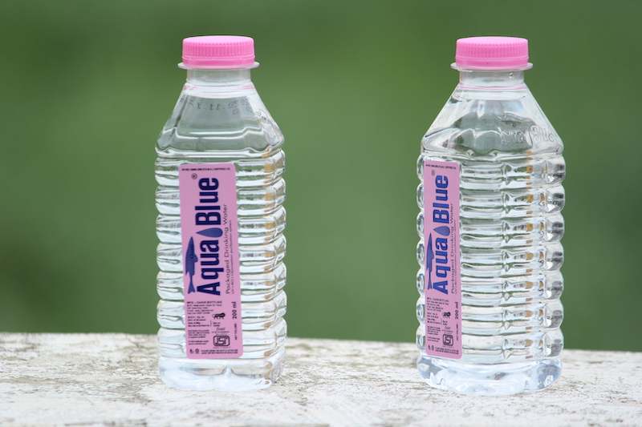
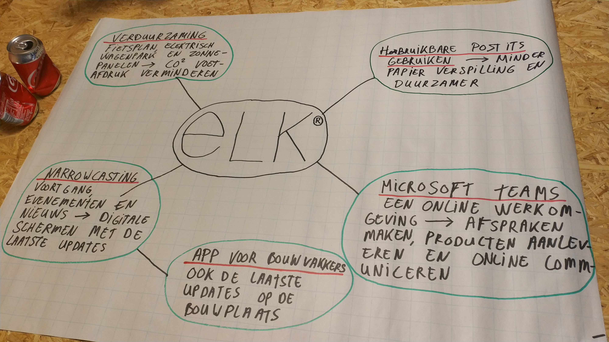
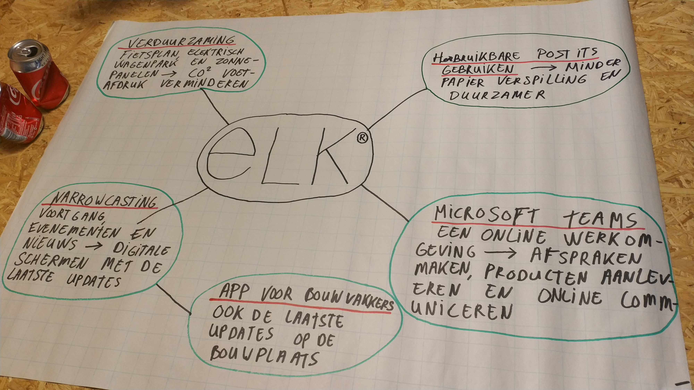

Hallo mijn naam is Jan Reuvers, ik studeer momenteel een opleiding Elektrotechniek met de major Industriële Automatisering op de Avans Hogeschool in Den Bosch.
Hiervoor heb ik de opleiding Middenkader Engineering BOL niveau 4 gevolgd, waar ik de basis van de elektro geleerd heb. Deze opleiding was breed georiënteerd,
waardoor ik ervaring heb opgebouwd in de industriële automatisering, huisinstallatie's en embedded systems.
Doordat ik een metaal/elektro vmbo vooropleiding heb gedaan, kan ik ook metaal bewerken met onder andere cnc machines.
Ik ben leergierig, hard werkend en doe altijd mijn uiterste best om de doelen te halen die ik voor ogen heb.
Voordat een project begint, moet het team een visie hebben om een project tot een goed eind te brengen. Een belangrijk onderdeel om een goede visie te krijgen met het team is een goede bedrijfscultuur in het bedrijf hebben.
Visievorming
Voor het maken van een project, moet elk lid van het team dezelfde visie hebben. Het is belangrijk dat het een visie is waar mensen enthousiast over zijn, zodat ze betere kwaliteit leveren. Voor het vinden van een gezamenlijke visie zijn een aantal stappen opgezet. Hieronder staan deze stappen kort uitgelegd zodat het team aanpassingen kan maken op hoe hun team het best functioneert.
Stap 1:
Waarom begin je hier aan, wat is de meerwaarde van de visie en voor wie?
Wie praat waar over mee?
Waarmee ben je aan het eind tevreden?
Stap 2:
Informatie verzamelen over de visie.
Stap 3: Waar gaan we het over hebben/ hoe gaan we het doen?
Stel een planning op
Stap 4: Wat vinden we er van?
Bespreek de ideeën met elkaar.
Stap 5: Keuzes maken
Stap 6: Deel je ideeën
Presenteer wat je gevonden hebt.
Bedrijfscultuur
Wat een bedrijfscultuur is, is een lastig fenomeen om uit te leggen. Een bedrijfscultuur is een zeer breed begrip maar het komt voornamelijk neer op de organisatie als sociale groep. De cultuur van een organisatie wordt ook wel ‘de ziel van de onderneming’ genoemd. Dit komt doordat een bedrijfscultuur de prestaties en daarmee de resultaten van een onderneming beïnvloedt.
Voordat je bij een bedrijf gaat werken is het belangrijk dat je erachter komt wat voor een bedrijfscultuur de organisatie heeft. De belangrijkste manier om dit te doen is vragen hoelang en hoe vaak de werknemers overwerken, waarop wordt ik beoordeeld (kwaliteit of snelheid), wordt er veel vergaderd en hoe staat het bedrijf in de markt. Doormiddel van deze vragen kom je er achter of het bedrijf bij jou past en of jij je op je gemak voelt.
Conclusie
Het belangrijkste is de bedrijfscultuur, zonder dit komt wordt geen goede kwaliteit geleverd. Indien het bedrijf de juiste cultuur heeft, dan is het belangrijk om elk lid van een team met de neuzen de goede kant op te zetten. Dit heeft als voordeel dat de leden elkaar versterken in plaats van tegen weken.
Een platform is een business model dat waarde creëert door verkoop mogelijk te maken tussen twee verschillende groepen, deze groepen zijn meestal klant en bedrijf. Om te kunnen verkopen, wordt gebruik gemaakt van grote netwerken. Een platform maakt gemeenschappen en markten zodat de gebruikers met elkaar kunnen communiceren. Verschillende platform bedrijven die voor een connectie tussen klant en bedrijf verzorgen zijn bijvoorbeeld Facebook, Uber en Alibaba.
Een platform business model bestaat al sinds het begin van de menselijke beschaving. In die tijd was het beter bekend als een marktplein met kraampjes en veiling huizen.
Supply chain
De verbinding tussen klant en bedrijf wordt steeds beter, zodat de klant meer vertrouwen heeft in de verkopen. Om beter inzicht te krijgen in de supply chain heb ik een onderzoek gedaan naar het optimaliseren van een supply chain en het in het kort vermeld met een aantal video’s.
Het belangrijkste is dat De klant doormiddel van smart technology zoals een smartphone direct verbinding heeft met de verkoper. Hierdoor kan de klant bijvoorbeeld direct zien op welke boot en met welke maatschappij zin product is geleverd. Voor de connectie wordt gebruik gemaakt van internet en voor het opslaan van al deze data wordt gebruik gemaakt van een groot database, dus het onderdeel “Big data” komt er bij kijken.
Een platform business model creert waarde door verkoop mogelijk te maken tussen klant en bedrijf. De communicatie tussen klant en bedrijf is zeer belangrijk, deze communicatie wordt ook wel supply chains genoemd. Grote bedrijven zoals amazon en alibaba zijn goede voorbeelden hiervan. Deze bedrijven zorgen dat de klant bij zoveel mogelijk data van het product kan, zodat de klant antwoord weet op de vragen zoals wat, waar, hoe en wanneer.
Pindakaas met of zonder toegevoegde suiker, met of zonder biologische pinda’s. Pindakaas met kleine stukjes pinda, met grote stukjes pinda of zonder stukjes pinda. Consumenten willen steeds meer verschillende dingen en voornamelijk ook zelf kunnen kiezen wat ze kopen en niet alleen voedsel. Voorheen ging je naar je dorp of stad en kocht je daar wat je nodig hebt. Als je nu iets nodig hebt ga je op zoek achter de computer bij google. Welk bedrijf heeft precies wat jij wilt en welke is het goedkoopst.
Digital supply lines
De impact van digitale technologie bij bedrijven is gigantisch, maar het moeilijke hiervan is om de bedrijven zover te krijgen dat ze het gaan gebruiken. Het gebruik van “de cloud” heeft het verkoop via internet mogelijk gemaakt wat veel voordelen heeft. Al deze data kan worden opgeslagen waardoor het gemakkelijker is geworden om onderzoek te doen naar het koopgedrag van klanten. Hiermee kan een bedrijf zien wat het mist en welke producten winst maken.
Verschillen
Er zijn verschillende bedrijven met verschillende ‘producten’ om te verkopen neem bijvoorbeeld Amazon en Uber. Amazon maakt gebruik van de cloud om veel verschillende kleine bedrijven hun producten te laten verkopen op hun site. Hierdoor kan de klant veel verschillende producten goedkoop en op één plaats vinden. Uber verzameld de data van taxi’s om zo de ideale manier van betalen te ontwikkelen. Hierdoor betalen de burgers die gebruik maken van taxi’s nooit te veel.
Conclusie
Het gebruik van onder andere de cloud maakt het voor bedrijven gemakkelijker om hun producten te verkopen. Elk bedrijf heeft een eigen manier van optimaliseren van hun supply line en heeft dus ook andere techniek nodig. Door deze technologie kan er beter voldaan worden aan wat de klant vraagt. Het grootste probleem is dat de bedrijven eerst geld moeten uitgeven om het werkend te krijgen en de werknemers zover krijgen dat ze er mee gaan werken.
Bij industrie wordt gedacht aan grote fabrieken, productie lijnen, continu het zelfde werk, maar de grote vraag is: wat is smart industy. Bij smart technology denk je aan hightech, zelf rijdende auto’s, robots en de rest van de mogelijkheden. Maar kan een fabriek ook smart gemaakt worden?
Het bedrijf
Het bedrijf “SEW-Eurodrive” heeft een fabriek waar hun productielijn veel smart technology geïmplementeerd heeft. Het implementeren hiervan wordt ook wel industry 4.0 genoemd. Om de slimme technologie toe te kunnen passen wordt gebruik gemaakt van de LEAN methode. Dit wordt gebruikt, omdat ze moeten bekijken waar hun knelpunten zitten en wat ze moeten oplossen of gemakkelijk maken. SEW heeft momenteel voornamelijk gekeken naar het logistieke gedeelte van het bedrijf, maar het is een goed begin. Het bedrijf wilt graag dat al hun producten “first time right” gemaakt worden. Dit betekend dat hun proces zo geoptimaliseerd moet zijn dat de werknemers geen fouten maken tijdens het assembleren van de producten. In de video staat een voorbeeld hoe het assembleren van een motor reductor gemakkelijker gemaakt is met behulp van transport robots.
Lean
procesverbeteren.nl geeft aan: “Lean concentreert zich op het maximaliseren van de ‘waardestroom’ richting de klant. Hiertoe worden allereerst - per productfamilie - de waarde toevoegende activiteiten in kaart gebracht. Dit gebeurt via een stroomschema oftewel value stream map. Vervolgens worden per voortbrengingsketen de waarde toevoegende stappen geleidelijk steeds beter op elkaar afgestemd. Tegelijkertijd worden zaken die tijd of materialen verspillen teruggedrongen.”. Bij SEW is ondervonden dat het verplaatsen van de motoren, reductors en hun overige producten intensief was en zwaar werk voor de mensen. Met behulp van Lean is dit probleem gevonden en opgelost.
Agile
Een mooi voorbeeld van niet Agile is de productie van de T-Ford. Dit was een grote fabriek die dezelfde auto met dezelfde kleur produceert. Om al de geproduceerde auto’s die aan te wachten waren op een klant op te slaan was weer veel ruimte nodig. Tegenwoordig willen de klanten een auto met hun uitbereidingen en kleur het liefst diezelfde dag hebben. Als producent heb je dan veel opslag nodig, of het wordt op een andere manier opgelost. SEW heeft de oplossing gevonden om van een levertijd van 3 weken naar 3 dagen te verminderen. Dit gebeurt door batch productie (veel achterelkaar produceren) in te wisselen voor enkelstuksproductie en ‘stromend’ produceren. procesverbeteren.nl geeft aan: “Het vloeroppervlak van de fabriek werd bovendien met meer dan de helft gereduceerd. Tussenvoorraden zijn vrijwel verdwenen, alle onderdelen liggen nu als grijpvoorraad bij productie-eilanden. Nog één laatste feitje: het werk wordt nu met minder dan de helft van de mensen gedaan, in vergelijking met 2002”.
Conclusie
SEW is een bedrijf wat gebruik maakte van batch productie en veel opslagruimte. Door gebruik te maken van de Lean methode zijn ze achter het probleem gekomen waarom de levertijden zo lang waren. Het probleem van de lange levertijd hebben ze opgelost door hun fabriek Agile te maken. Hierdoor heeft SEW vele voordelen zoals de fabriek is met de helft van de oppervlakte gereduceerd en met de helft van het aantal werknemers.
Procesoptimalisatie en risicomanagement tijdens de studie
Tijdens mijn studie is er weinig aandacht besteed aan het verbeteren van een proces in het management gebied. De reden hiervoor is dat de studie gericht is op het optimaliseren van een PLC programma. Een Proces optimaliseren zodat er geen mensen meer aan te pas komen is wat de opleiding in het kort inhoud. Dit is anders als het procesoptimalisatie waar over gesproken wordt tijdens de minor wat inhoud om een bepaald proces aan te passen zodat het minder tijd en materiaal kost. Deze manier is richting de bedrijfskunde gericht waardoor ik hier weinig vanaf weet. De LEAN methode heb ik gehoord tijdens mijn stage, maar alles wat ik hiervan weet is dat het de manier van werken zou moeten verbeteren.
Nieuwste wetenschappelijke in de procesoptimalisatie en risicomanagement
Voor het optimaliseren van een proces zijn verschillende methodes bedacht. De namen van deze methodes zijn: Lean, TOC, QRM, Six Sigma, TPM en Agile.
Volgens Dr. Ir. Jaap van Ede verbeteren al deze methodes op dezelfde manier: hypothesevorming, testen en continu aanpassen. Elk procesverbetermethode maakt gebruik van het volgende stappenplan: 1.Observeren 2.Vragen 3.Hypothese 4.Experimenten 5.Checkt. Elke methode stelt dezelfde typen vragen en het gaat steeds over varianten op: hoe kan ik de waarde creatie vergroten. Concreet betekent dit: alleen produceren als er een klantvraag is, kosten verlagen, verspillingen wegnemen, doorlooptijd verkorten en de fouten reduceren.
Betekenis in de praktijk
Een duidelijk beeld van procesoptimalisatie ziet u in de bijgevoegde video. Zodra de klant een vraag heeft, wordt het proces gestart. Hierbij wordt gekeken of meerdere PCB ontwerpen op een grote plaat gezet kunnen worden om verspilling weg te nemen. Het controleren of alle PCB’s functioneren wordt elke PCB getest door een robot om de arbeidskosten te verlagen. In de gehele fabriek wordt gebruik gemaakt van robots om fouten te verminderen en om sneller de producten te fabriceren.
Value proposition is een methode wat een gedeelte van het “business model canvas” uitbreid. Hierbij wordt een duidelijk en uitgebreid schema gemaakt van het gedeelte “waarde propositie”. Met het value proposition design wordt gekeken naar wat de klant werkelijk wilt. Dat wat de klant wilt en niet wilt, wordt in een visueel model gezet zoals in figuur 1. Nadat gekeken is wat een klant wilt, wordt er gekeken hoe deze verwachtingen/eisen gewaarborgd en aangevuld kunnen worden door het bedrijf.
Het voordeel van dit model is dat het bedrijf gedwongen wordt om kort en bondig te formuleren. Het verhaal van een klant kan in je hoofd een logisch verhaal zijn, maar zodra het opgeschreven moet worden kan het anders staan als verwacht. Het is dus het beste om eerst te kijken naar de klant en wat deze wilt voordat je de oplossingen gaat bedenken.
Een stap verder is het bekijken of de vraag van de klant een competitieve voordeel heeft voor het bedrijf. Dit kan aan de hand van een verdiepend model (zie figuur 2). Met dit model kan het bedrijf de belangrijkste meldingen en mogelijke velden voor verbeteringen identificeren. De onderdelen die hieruit ontstaan hebben mogelijk een grote impact en zouden in de toekomst aangepakt kunnen worden.
Hoe ziet mijn smart research workflow eruit:
Tijdens mijn opleiding heb ik veel tijd besteed aan het voorbereiden van hoe de software voor een machine of productielijn geschreven moet worden. Hiervoor zijn er verschillende manieren aangeleerd waarbij het GAMP-V model vooraan staat.
Bij het gebruik van het GAMP-V model wordt eerst een “User requirements specification” aangemaakt, waarna dit gecontroleerd wordt door het bedrijf en in mijn geval door mij en mijn projectgroep. Nadat alles op papier staat wat de bedoeling is, wordt de hardware en software gescheiden gespecificeerd en ook gecontroleerd. Als dit alles gemaakt is, wordt het project gestart en ontstaat er een functionerende machine. De functionaliteiten worden eerst gecontroleerd door het bedrijf en stelt hier een document van op waarna het opgeleverd wordt aan de klant. Hierna wordt de machine verscheept naar de klant en wordt er nogmaals gecontroleerd op alle functionaliteiten.
Dit GAMP-V model is dat wat ik graag gebruik bij het maken van een project. Voor het onderzoeken naar informatie op het internet, maak ik gebruik van de google Chrome extensie Diigo. Dit is een extensie die je in Chrome installeert en je kunt er webpagina’s mee opslaan en de belangrijke punten bij onderstrepen. Later kun je de opgeslagen pagina’s gemakkelijk terug vinden en de belangrijke punten in de verschillende pagina’s bij elkaar voegen om het onderzoek naar informatie gemakkelijker te maken.
Dus hoe mijn ideale research workflow eruit ziet is met behulp van bijvoorbeeld diigo voor het verzamelen van veel informatie op het internet, zodat ik hiermee de belangrijke informatie op een plaats heb staan en dit gemakkelijk kan scheiden naar de informatie die later gebruikt kan worden. Nadat de informatie gevonden is, kan ik dit implementeren in het project wat als opzet gebruik maakt van het GAMP-V model.
Tijdens de minor heb ik andere manieren gevonden van workflow, maar hier ben ik niet bekent mee. Er wordt veel gepraat over Scrum, maar hier heb ik weinig van gehoord tijdens mijn opleiding. Na het kijken van een video, lijkt het erg op de workflow van het GMAP-V model, maar ik ben zeker geïnteresseerd om meer over Scrum te gaan leren.
Tijdens de lessen die ik gehad heb op het Avans waar de studie Industriële automatisering gegeven wordt, hebben we het regelmatig over waar de industrie in de toekomst heen gaat. Om meer informatie hierover te vergaren heb ik een minor gekozen welke gaat over de toekomst van de automatisering en fabrieken.
Tijdens een van de lessen hebben we het gehad over onderdelen wat een fabriek zou kunnen verbeteren in het kader van smart technology. Na een onderzoek ben ik erachter gekomen dat de onderdelen waar deze minor op gefocust is, dezelfde manieren gebruikt als wat ik gehad heb tijdens mijn studie. Het “Foutloos produceren” is waar de studie op gefocust is. De onderdelen “Big Data” en “The Cloud” is een groot onderdeel wat de studie industriële automatisering over gaat. Het “IoT” en “robotisering” is over gesproken en ik weet wat het is, maar de verdieping hierin mist nog. De overige thema’s “Block chain” en “3D printing” is geen onderdeel van de studie, maar het trekt wel mijn aandacht.
Na een literatuur onderzoek naar de verschillende smart industry thema’s heb ik ondervonden dat de onderdelen “Big data”, “IoT” en cloud technology precies hetzelfde is zoals ik het gelezen, geleerd en gebruikt heb tijdens mijn school periode. Het blockchain principe trekt mijn aandacht, omdat het nieuw is en ik hier geen verstand van heb. Ik ben dus erg benieuwd wat ik hiervan tijdens de minor ga meekrijgen.
Smart Business
Hieronder staan alle Smart Business opdrachten
De 5 parameters van lean:
Tijdens het onderwerp smart business is het onderdeel Lean te spraken gekomen. Om dit beter te begrijpen en waarom bedrijven hier meer mee gaan werken, heb ik onderzoek gedaan naar Lean. Om een bedrijf beter op zichzelf te laten functioneren, zijn er verschillende methodes bedacht om dit te bereiken. Voor het verbreden van de kennis in Lean is een bedrijf gevraagd hoe ze Lean toepassen in hun bedrijf. In dit verslag wordt gefocust op het onderwerp Lean, de 5 parameters hiervan en hoe het bedrijf “Elk” dit toepast.
Flow
Deze stap wordt ook “identify value” genoemd. Hier wordt gekeken naar de producten of service van het bedrijf vanuit de ogen van een klant gekeken met de vraag hoe het bedrijf het kan verbeteren. Dit helpt om dat te vinden wat het bedrijf speciaal maakt.
“Elk” heeft sinds het begin gefocust op het schilderen, maar kwam al snel achter dat dit niet goed genoeg is. Ze zijn gaan kijken wat ze kunnen verbeteren en ondervonden dat de mensen geen motivatie hadden om te werken en dat alleen schilderen niet genoeg was om de crisis te doorstaan.
Customer
Als je concreet ondervonden hebt wat een bedrijf wilt en doet kun onderzocht worden, hoe daar te komen. Met behulp van “value stream mapping” hiermee kan een team/bedrijf begrijpen hoe een project door het bedrijf loopt en nog belangrijker, waar het vast loopt. Het product van deze stap is een duidelijke map van de organisatie waar elke stap van het proces staat en hoe het verloopt.
“Elk” heeft ondervonden dat uiteindelijk maar 7% van alle informatie die de klant geeft op het ontwerp terecht komt. Dit is zeer weinig, waardoor het project veel meer/minder werk te verduren heeft en dus duurder voor het bedrijf wordt.
Process
Met de map die bij de vorige stap gemaakt is, kan gekeken worden naar hoe het proces geoptimaliseerd kan worden. Een Lean team kan de flow van alles verbeteren, dus niet alleen het producerende gedeelte, maar ook bijvoorbeeld de klant communicatie. Bekijk waar inefficiëntie, wrijving en vast lopers zitten in het huidige proces.
“Elk” heeft is volgorde van het project achterna gegaan en zijn tot de ontdekking gekomen dat de projecten “over de muur gegooid worden”. Tussen de verschillende afdelingen is dus geen of weinig communicatie waardoor de informatie verloren gaat.
Supplier
Deze stap wordt “establish pull” genoemd. Hier wordt gekeken naar wanneer de klant het product werkelijk wilt. Het idee hierachter is om de klant de mogelijkheid te geven om aan de waarde te trekken zoals hij wilt. In plaats van veel op voorraad te hebben voor een order, moet er gekeken worden naar wat een klant direct nodig zou hebben en wat op bestelling verstuurd kan worden.
“Elk” wilde van hun voorraad af, want producten die staan leveren geen geld op en kost ruimte. Ze hebben gekeken wat direct nodig kan zijn en dit zo min mogelijk gemaakt en de producten wat direct besteld kan worden staat niks meer van in het magazijn. Hierdoor heeft het bedrijf minder opslagruimte nodig en worden de onderdelen direct vanuit de leverancier geleverd bij de projecten.
Workforce
De laatste stap voor het lean proces is eigenlijk een “continuous improvement. Hier wordt gezocht naar wat de meest efficiënte procedure is en deze wordt steeds uitgebreid en veranderd. De waarde wordt steeds verhoogd in termen van minder kosten, tijd, producten gebruik, opslag, enz.
“Elk” blijft bezig met onderzoeken naar hoe hun werk proces verbeterd kan worden en ze staan open voor nieuwe ideeën hoe hun efficiëntie omhoog gebracht kan worden.
Feedback excursie
De gehele excursie was leerzaam en niet alleen voor het Lean proces, maar ook hoe je een bedrijf kunt verbeteren inclusief de werkwijze van werknemers. De presentatie van elk was uiterst interessant en het heeft nieuwe ideeën geopend bij mij die ik later en nu kan gaan gebruiken.
De Scrum presentatie was niet heel aantrekkelijk of interessant waardoor ik mijn aandacht snel verloor. De opdrachten en het gebruik van scrum tijdens de opdrachten was een zeer goede toevoeging tot het binden van de groep en ook zeer leerzaam. De scrum uitleg is dus een goede toevoeging!
Ik vond de gehele dag een goede toevoeging voor de minor.
Verzekeraars krijgen hun inkomsten door middel van premiebetalingen. Het is voor de verzekeraar dus belangrijk dat de klant geen schade maakt, zodat er meer verdient kan worden.
Het is dus in het voordeel van de verzekeraar als er data verzameld gaat worden om de ongevallen te voorkomen. Tegenwoordig is bijna overal een apparaat wat verbinding heeft met de Cloud met genoeg sensoren om de data te verzamelen en te versturen.
Deze verzamelde data kan ook gebruikt worden om tips te versturen naar de klant zodat deze zijn leef wijze kan verbeteren en dus veiliger omgaat. Zo kan ook op de belangrijke bezittingen van een klant een sensor geplaatst worden, zodat deze gevold kan worden in geval van diefstal. Hiernaast kan de data ook gebruikt worden om andere verzekeringen en adviezen te versturen om zo de business te verbreden.
De verzamelde data heeft ook een keerzijde voor de klant tijdens bijvoorbeeld het auto rijden. Door de hoeveelheid verzamelde data, kunnen er ook boetes uitgeschreven worden bij het overschreden van de maximale toegestane snelheid op wegen.
Indien hieronder geen afbeelding staat, open de pagina dan in microsoft Edge.

The MobileNet model labeled this as
... with a confidence of
...
Machinelearning wordt steeds meer gebruikt, omdat dit de toekomst is. Een goed voorbeeld om te laten zien wat machine learning is, is een computer die het eerste level van het spel ‘the Worlds Hardest Game’ probeert te halen. Hierin worden meerdere oplossingen aangeboden en telkens wordt de beste gekozen om zo verder te gaan.
Robots
Om robot armen iets simpels te laten doen zoals het dicht vouwen van een boek word veel geoefend. Na veel ‘trail and error’ kan de robot iets simpels, maar het is natuurlijk de bedoeling dat deze net zo slim worden als de mens.
Een mooi begin is het overnemen van de customer service. Hiervoor kan een chatbot gebruikt worden die luistert naar wat de klant zegt en deze de juiste richting heen stuurt of de klant met de juiste persoon in contact brengt.
Conclusie
Machine learning wordt de toekomst, maar het is nog ver van werkend. Er zijn verschillende toepassingen die gebruikt worden, maar hier wordt nog menselijke opzichter bij indien het fout gaat.


 
